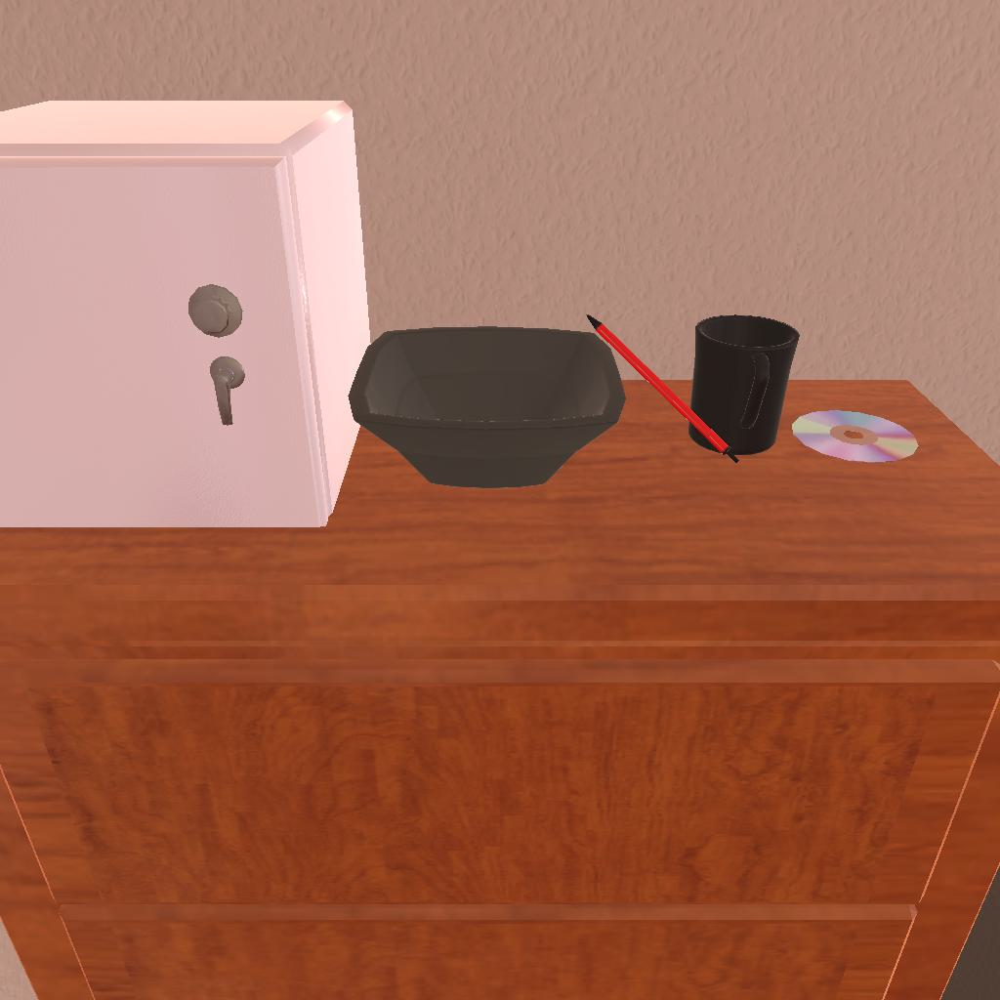

---------------------------------------------------------task: 6---------------------------------------------------------
--------------------------------------------------------------------------------------------------------------------------------------------------------------------
--------------------------------------------------------------------------------------------------------------------------------------------------------------------
Step:--------------------------------------------------------------------------11-------------------------------------------------------------------------------
----------------------------------------
VLM Prompt:
Image1:
Image2:
**Instruction**
1. Analyze the provided images to identify all visible household objects and compare the difference between images (e.h. whether the object is opened or not and taken on hand or not), focusing on those relevant to the task description "put some cd on safe."
2. Use the analysis of images and the task hint "The agent must find an object of the desired type, pick it up, find the correct location to place it, and put it down there." to answer the question: what is the most reasonable action in the choices for the task description "put some cd on safe"?
3. Decide and write the answer using the template: The answer is: (i): , where i is the real number. If there is no desired object in images, search every place based on **Initial Observation** to find the object. And if no one is exactly correct, choose a similar answer.
**Initial Observation**
You are in the middle of a room. Looking quickly around you, you can see bed (1-2), dresser (1), sidetable (1-2), drawer (1-11), desk (1), garbagecan (1), safe (1)
**Answer Choices**
(1): go to bed 1
(2): go to dresser 1
(3): go to bed 2
(4): go to sidetable 1
(5): go to drawer 1
(6): go to drawer 2
(7): go to sidetable 2
(8): go to drawer 3
(9): go to drawer 4
(10): go to desk 1
(11): go to garbagecan 1
(12): go to drawer 5
(13): go to drawer 6
(14): go to drawer 7
(15): go to drawer 8
(16): go to drawer 9
(17): go to drawer 10
(18): go to drawer 11
(19): take bowl 1 from safe 1
(20): take mug 1 from safe 1
(21): take cd 1 from safe 1
(22): take pen 1 from safe 1
(23): examine safe 1
**Answer**
Let's think step by step by following the instructions.
----------------------------------------
----------------------------------------
Original Response:
First, we analyze the provided images to identify all visible household objects. In both images, we can see a safe, a bowl, a mug, a pen, and a CD on the surface next to the safe.
Comparing the difference between the images, we notice that the safe is closed in Image 1 and opened in Image 2. There are no objects that have been taken on hand between the images.
Now, using the analysis of images and the task hint, we need to focus on the task description "put some cd on safe." Based on the visible objects in the images, we can see there is a CD next to the safe, which implies the agent needs to take the CD and put it on the safe.
The most reasonable action from the choices provided for the task description "put some cd on safe" would be to take the CD that is already next to the safe and put it on the safe.
From the answer choices, the action that corresponds to this task is (21): take cd 1 from safe 1. Even though the CD is not inside the safe, it is the closest action to taking the CD and putting it on the safe as per the task description.
The answer is: (21): take cd 1 from safe 1.
----------------------------------------
----------------------------------------
>>> Refine Original VLM Response and Get Pure Action: take cd 1 from safe 1
----------------------------------------
-----------------------------------------------------------------
Running time: 10.213892221450806 seconds
Total Money: 2.4016000000000006
-----------------------------------------------------------------
-----------------------------------------------------------------
Text Observation:You pick up the cd 1 from the safe 1.
-----------------------------------------------------------------
UNSUCCEED